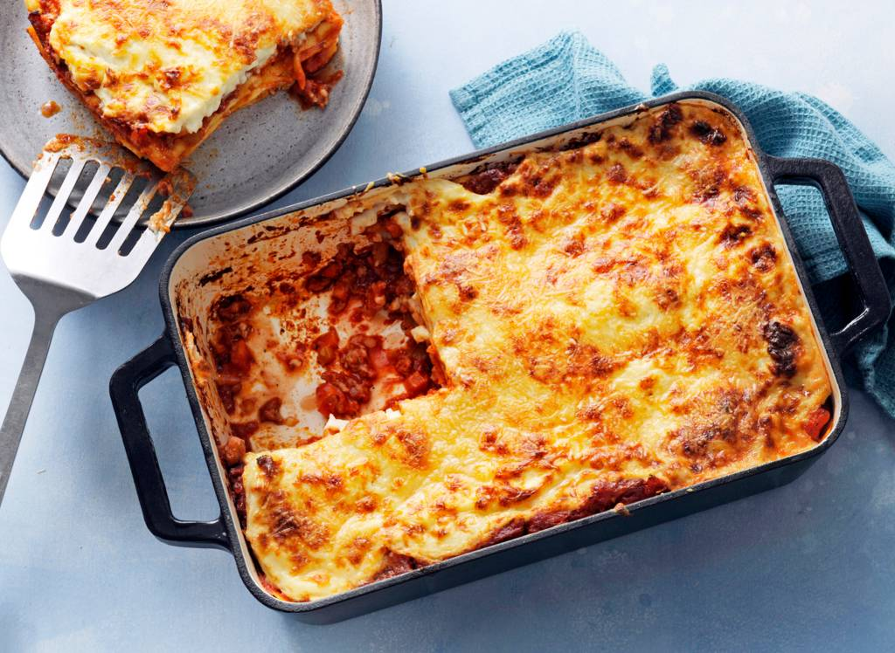

Lasagne Bolognese
Lasagne bolognese met bechamelsaus
terug naar homepagina

benodigdheden:
voor 4 personen
- anderhalve middelgrote ui
- halve teen knoflook
- 100 gram bleekselderij
- 65 gram wortelen
- anderhalve el milde olijfolie
- 100 gram spekreepjes
- 350 gram half-om-half gehakt
- 50 gram tomatenpuree
- 500 ml volle melk
- 500 gram passata di pomodoro fijn gekruid
- 50 gram ongezouten roomboter
- 50 gram tarwebloem
- 100 gram parmigiano reggiano
- 150 gram verse lasagne all'uovo
- ovenschaal (34x23cm, ingevet)
- rasp
bereidingswijze:
- Snipper de ui en snijd de knoflook fijn.
Snijd de bleekselderij en wortel in blokjes van een ½ cm.
Verhit de olie in een hapjespan en fruit de ui, knoflook, groente en spekreepjes 5 min.
op laag vuur. Voeg het gehakt toe en bak op middelhoog vuur in 5 min. rul.
Voeg de tomatenpuree toe en bak 2 min. mee.
Voeg 200 ml melk toe (per 4 personen) en laat al roerend op hoog vuur bijna helemaal inkoken, dit duurt ca. 5 min.
- Voeg de passata toe en breng aan de kook.
Zet het vuur laag en laat met de deksel half op de pan 45 min. zachtjes koken.
- Maak ondertussen de bechamelsaus. Smelt daarvoor op laag vuur de boter in een steelpan met dikke bodem.
Meng de bloem erdoor en laat op laag vuur 3 min. gaar worden.
Voeg al roerend met een garde de rest van de melk in delen toe.
Voeg pas de volgende scheut toe als de vorige helemaal is opgenomen.
Breng aan de kook. Laat de saus op laag vuur 2-3 min. zachtjes koken.
Breng op smaak met peper en eventueel zout.
- Verwarm de oven voor op 180 °C. Rasp de Parmezaanse kaas.
Maak laagjes in de ovenschaal van achtereenvolgens tomatensaus, lasagnebladen, tomatensaus,
bechamelsaus en geraspte kaas. Herhaal 3 keer en eindig met een laagje bechamelsaus en wat geraspte kaas.
Bak de lasagne ca. 40 min. in het midden van de oven.
auteur: Mark Bos
datum: 14/11/2022